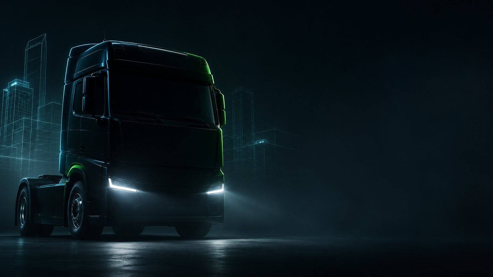
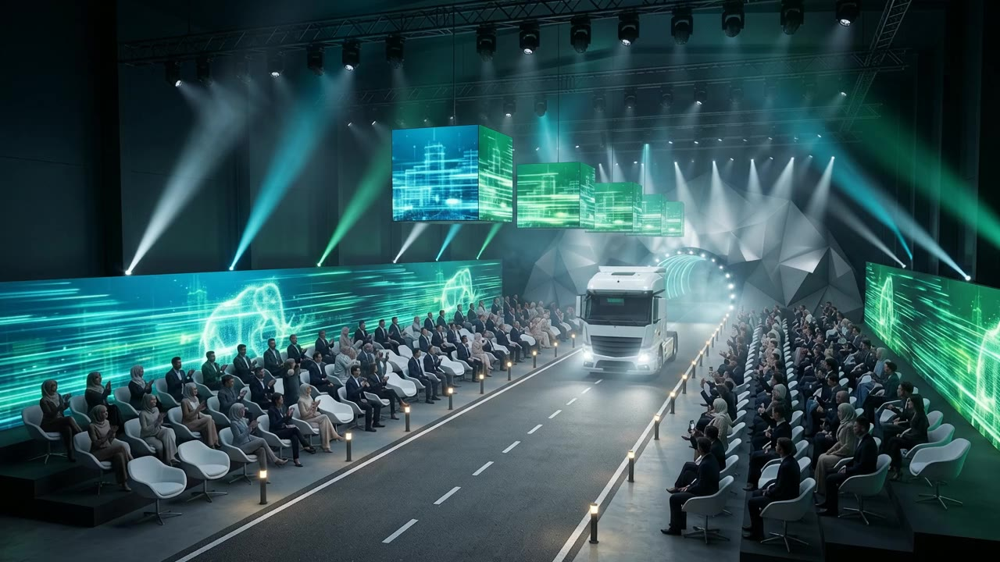
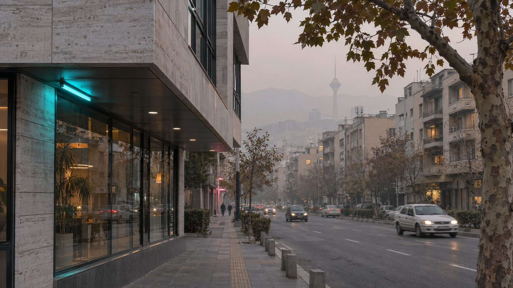

Launch-night proposal · Titan Diesel hybrid tractor
The City’sFresh Breath
Diesel on the road, electric in the city. A launch night in three parts — from a grey, smoggy city to a city that breathes again.
SCROLL
The big idea
Outside the city, the tractor climbs mountain roads with a load, on diesel. Inside the city, the same tractor runs on electric power with the diesel engine off. On launch night that truth happens in front of the guests. The reveal itself is the proof.

The night in one film · 60 seconds
Watch the
whole night.
From the check-in foyer to the second city: twelve scenes, three parts, one minute.
The proposal
Seven chapters.
01The ideaOne truth, one name, one night in three parts.→ 02The Grey CityCheck-in, the corridor and a city that cannot breathe.→
02The Grey CityCheck-in, the corridor and a city that cannot breathe.→ 04Project OxygenDinner in the forest, and a city that has come back to life.→
04Project OxygenDinner in the forest, and a city that has come back to life.→ 05The planRun of show, layout and guest flow, materials and execution.→
05The planRun of show, layout and guest flow, materials and execution.→ 06ResearchSeven lessons from 23 global launches.→
06ResearchSeven lessons from 23 global launches.→ 07Next stepsWhat must be confirmed, and what we need from whom.→
07Next stepsWhat must be confirmed, and what we need from whom.→
02The Grey CityCheck-in, the corridor and a city that cannot breathe.→
03The Hybrid PulseThe tractor rolls out of the mountain on electric power.→04Project OxygenDinner in the forest, and a city that has come back to life.→05The planRun of show, layout and guest flow, materials and execution.→06ResearchSeven lessons from 23 global launches.→07Next stepsWhat must be confirmed, and what we need from whom.→
The City’s
Fresh Breath
Diesel on the road, electric in the city — one journey, two powers.
Start with the idea →